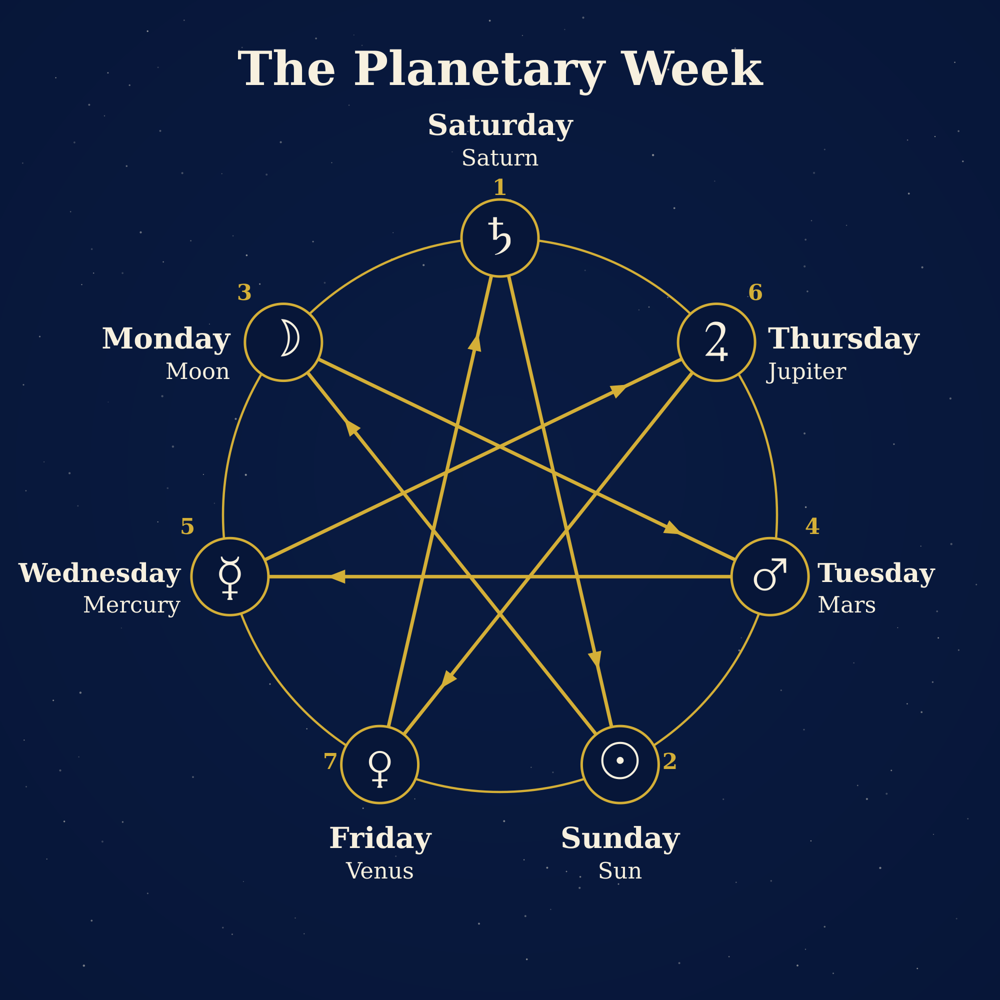

Why are the days and months named as they are?
The TPU calendar has clean weeks and 28-day months that begin on Monday. The names we give to days and months, however, come from a much older calendar and hide two riddles: why the days come in the order Monday, Tuesday, Wednesday, and why December, the twelfth month, means “ten”.
Why do the days of the week come in this order?
Monday is the Moon’s day, Tuesday is Mars’s, Wednesday is Mercury’s, Thursday is Jupiter’s, Friday is Venus’s. These are five of the seven bodies that the ancients saw moving among the fixed stars. The other two, the Sun and Saturn, are still recognizable in English, in Sunday and Saturday.
The ancients knew an order of the heavenly bodies, from the slowest to the fastest in the sky: Saturn, Jupiter, Mars, the Sun, Venus, Mercury, the Moon. Yet, starting with Saturday, our week is Saturn, the Sun, the Moon, Mars, Mercury, Jupiter, Venus. The two sequences do not resemble each other, not even reversed.
The answer comes from a calculation. The ancients dedicated bodies not only to days but also to hours: they began with the first hour for Saturn, the second for Jupiter, the third for Mars, and so on, in a cycle, and the day took the name of the body that ruled its first hour. The day has 24 hours and there are seven bodies: 24 = 3 × 7 + 3 (by our calculations). After three complete cycles, three hours remain, so the first hour of the next day falls three places further along the sequence. Each time, you skip two bodies and land on the third: from Saturn to the Sun, from the Sun to the Moon, then Mars, Mercury, Jupiter, Venus. That gives Saturday, Sunday, Monday, Tuesday, Wednesday, Thursday, Friday, exactly the order we know.

The planetary week: the seven bodies are placed on the circle from the slowest to the fastest, clockwise, starting with Saturn; the line joining them every third position gives the order of the days, from Saturday (1) to Friday (7).
No one, then, ever decided this order: it came out of a division with a remainder. The seven-pointed star is only a way of seeing the same calculation. The Roman historian Cassius Dio, in the third century, says that the custom of dedicating the days to the seven bodies came from the Egyptians and that the ancient Greeks had not understood it; he gives two explanations, one musical and one through the hours, and both lead to the same step of three. We cannot say for certain whether the system of hours came before the names of the days or came afterward to explain them.
Two days were rewritten, however. In the Romance languages, samedi (French) and sâmbătă (Romanian) come from the Jewish Sabbath (Latin sabbatum), and dimanche and duminică from dies dominica, “the Lord’s day”: where the Romans had the day of the Sun, Christians put the Lord’s day. English chose the opposite: it kept the names of the Sun, the Moon, and Saturn and replaced four Roman gods with Germanic ones, hence Tuesday and Thursday. In 321, the emperor Constantine made the day of the Sun a day of rest throughout the empire; the decree still calls it the day of the Sun, so the change of name came gradually.
The week is thus an ancient convention made of three things: the sky gives the names, arithmetic gives the order, and religion rewrote two days.
Why does December, the twelfth month, have a name that means “ten”?
September, October, November, and December come from the Latin words for seven, eight, nine, and ten, but they are the ninth, tenth, eleventh, and twelfth months. The explanation lies in Roman tradition: the year is said to have had ten months at first and to have begun in March (this is how Ovid presents it in the Fasti, with Mars the first month and Venus the second). January and February are said to have been added later, and all the numbers shifted by two places without the names changing.
| Month today | Latin word | Meaning | Position in the ten-month year (from March) | Position today |
|---|---|---|---|---|
| July (Quintilis, then Iulius) | quintus | fifth | 5 | 7 |
| August (Sextilis, then Augustus) | sextus | sixth | 6 | 8 |
| September | septem | seven | 7 | 9 |
| October | octo | eight | 8 | 10 |
| November | novem | nine | 9 | 11 |
| December | decem | ten | 10 | 12 |
Two of these months even changed their names. The fifth month (Quintilis) took the name of Julius Caesar in 44 BC, according to Macrobius by a law proposed by Marcus Antonius, and the sixth (Sextilis) that of Augustus in 8 BC, by a decision of the Senate.
Another story is also told: Augustus supposedly took a day from February so that his month would not be shorter than July. The ancient texts we have read do not confirm it: Censorinus and Macrobius say that Caesar added days to the short months, two to January, August and December and one to the others, and Macrobius states that February received no day; August therefore already had 31 days in Caesar’s time. Modern sources do not all agree, so it remains a story without support in an ancient source.
What does this mean for the 13-month calendar?
The TPU calendar keeps the seven-day week and the names of the days, but gives them a clean frame: 13 months of 28 days, exactly four weeks, each month beginning on Monday. The months can be named by numbers (month 1 … month 13), precisely so that the names no longer fall behind the positions, as “December” falls behind its place as the twelfth month.
The week follows no cycle in the sky: it is a convention, but one with a history of arithmetic and heavenly bodies, and that is not lost.
More in the book
The subject takes two chapters in A World Against Time, by Carstian: Chapter 11 (the day of the week and the seven-pointed star) and Chapter 14 (the Roman months and their names), with the notes and the ancient sources. This site is a bonus to the book: here you find the diagram, and in the book you find the explanations.
Ancient sources read
Cassius Dio, Roman History, 37.18–19 · Ovid, Fasti, books 1 and 3 · Censorinus, De die natali · Macrobius, Saturnalia, 1.12–14. The full list is in the book’s bibliography.